Il menu principale di Word è rappresentato dalla barra contenente i nomi delle principali sezioni:
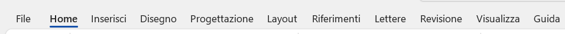
Ogni menu utilizza un sottomenu specifico. Ad esempio, entrando nel menu la sottosezione è la seguente:
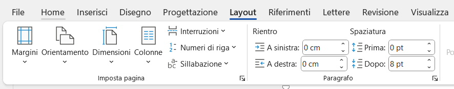
Il testo è suddiviso in paragrafi. Ogni paragrafo termina con il "return" (ritorno a capo) che separa il documento in blocchi distinti.
Per visualizzare i paragrafi e altri caratteri speciali (spazi, tabulazioni…) usa il bottone "Mostra tutto" presente nel menu .
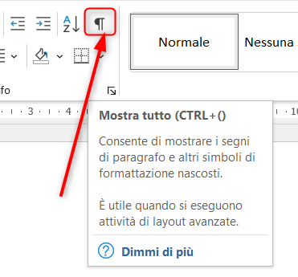
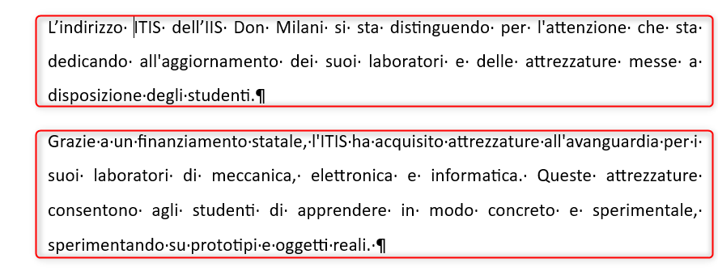
Anche se appare logico "andare in una nuova pagina" premendo più volte il tasto Invio, questa pratica non è corretta. Si creano paragrafi vuoti che, in caso di successive modifiche, farebbero "scivolare" tutto il documento.
Premere ripetutamente Invio crea paragrafi vuoti (visibili come ¶¶¶) che rendono il documento instabile alle modifiche.
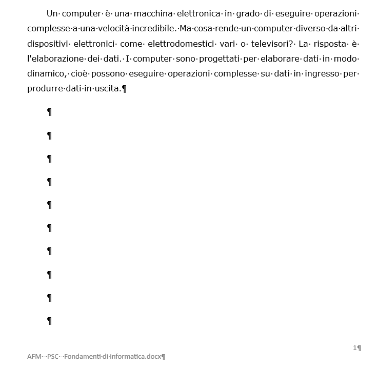
Inserire una interruzione di pagina con Ctrl+Invio. Questo elemento può essere reso visibile attivando "Mostra tutto".
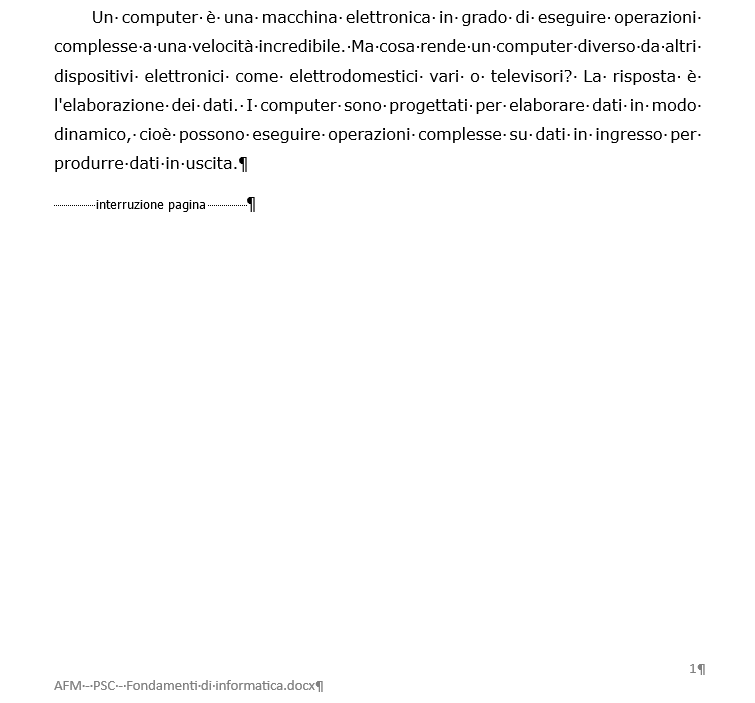
La prima parte del menu è dedicata alla formattazione dei caratteri: font, dimensione, enfasi (grassetto, corsivo, sottolineato), colore, ecc.
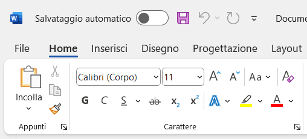
La seconda parte contiene i principali comandi di gestione dei paragrafi:
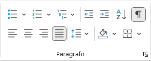
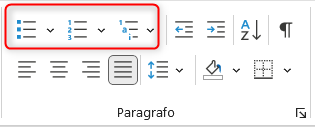
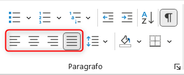
Il menu Interlinea permette di impostare la spaziatura tra le righe dello stesso paragrafo. Il valore consigliato per una leggibilità ottimale è 1,5:
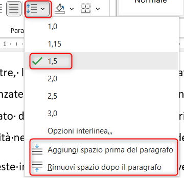
Esempio di testo con interlinea e spaziatura tra paragrafi applicata:
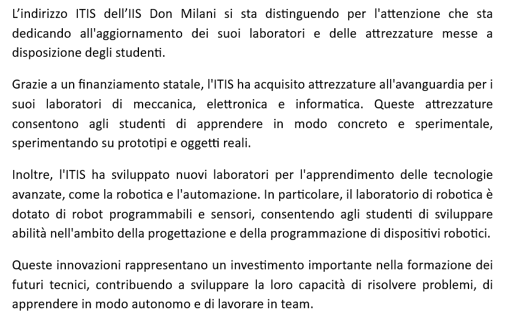
Il sottomenu "Paragrafo" offre una visione estesa delle opzioni. Ci si accede usando il pulsante indicato:
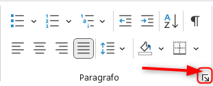
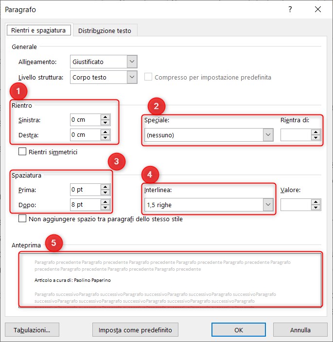
- ① Rientro — spostamento del testo rispetto ai margini (sinistro/destro), espresso in cm
- ② Rientro speciale — es. solo la prima riga, per dare maggior risalto al paragrafo
- ③ Spaziatura — spazio Prima e Dopo ogni paragrafo (in punti tipografici)
- ④ Interlinea — spaziatura tra le righe dello stesso paragrafo
- ⑤ Anteprima — visualizza in tempo reale l'effetto delle impostazioni
La spaziatura tra i paragrafi (③) permette di distanziare uniformemente i blocchi di testo senza usare "Invio" aggiuntivi che creerebbero paragrafi vuoti.
Esempio di impostazioni per un documento con rientro prima riga e relativo risultato:
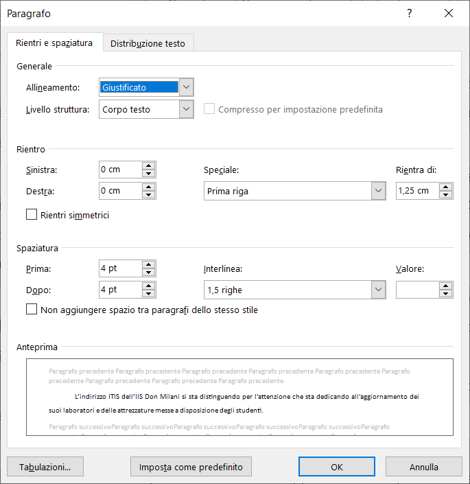
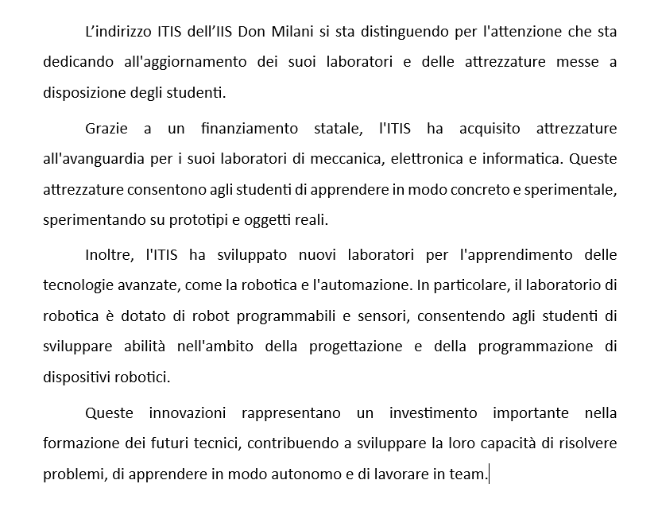
Per gestire la disposizione del testo nella pagina è utile visualizzare il righello. Se non presente, si attiva dal menu spuntando la checkbox "Righello":
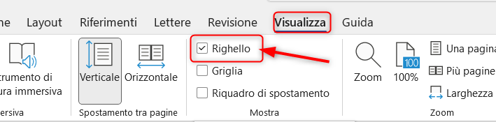
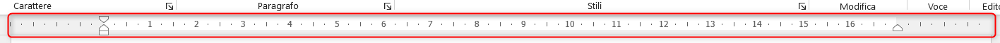
La funzione "Copia formato" permette di replicare le impostazioni di formattazione di una porzione di testo in altre parti del documento.
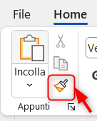
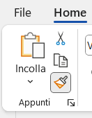
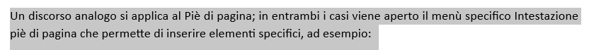
Elementi specifici del paragrafo origine (es. singole parole in grassetto o sottolineate) si perdono nel processo di duplicazione formato.
Queste sezioni speciali vengono utilizzate per creare elementi comuni a tutte le pagine: un titolo in cima, informazioni aggiuntive (autore, data, numero di pagina) in fondo.
Fare doppio click nell'area superiore (intestazione) o inferiore (piè di pagina) della pagina. Per uscire, fare doppio click nell'area di testo normale.
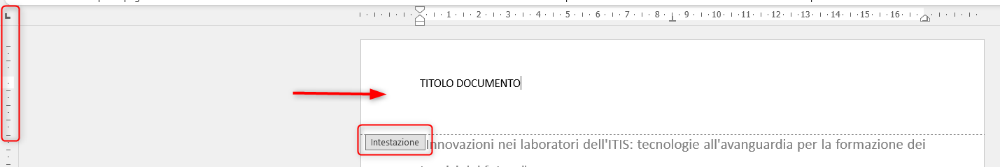
In ogni pagina verrà replicato automaticamente tutto quanto presente nell'intestazione:
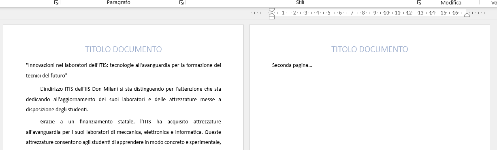
Quando si è nell'intestazione o nel piè di pagina si apre il menu specifico che permette di inserire:
- ① Numero di pagina (solitamente nel piè di pagina)
- ② Data, ora, informazioni sul documento
- ③ Immagini (es. logo aziendale)
- ④ Passaggio rapido tra intestazione e piè di pagina
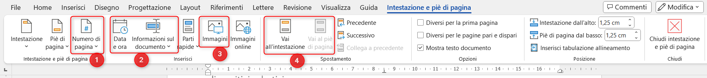
Il menu permette di modificare l'impostazione della pagina (margini, orientamento, dimensioni) e di gestire il contenuto su più colonne in stile "giornale".
Completare prima tutto il contenuto con una sola colonna (il default), poi modificare le impostazioni solo sulle parti che si vogliono ridisporre.
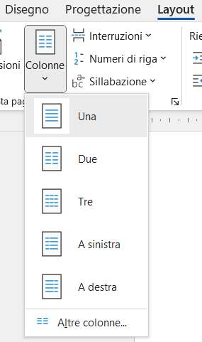
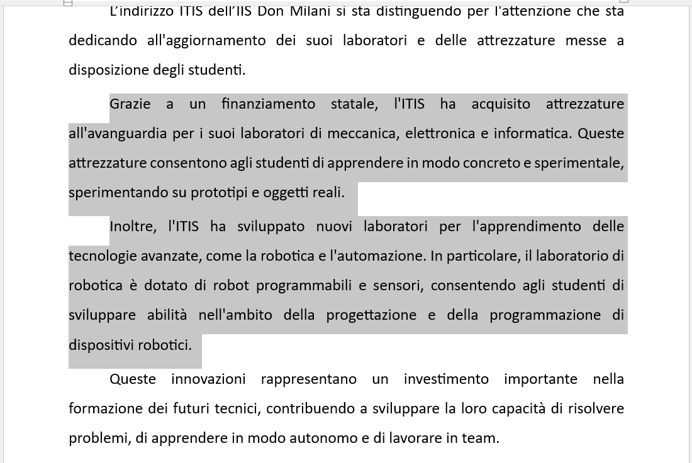
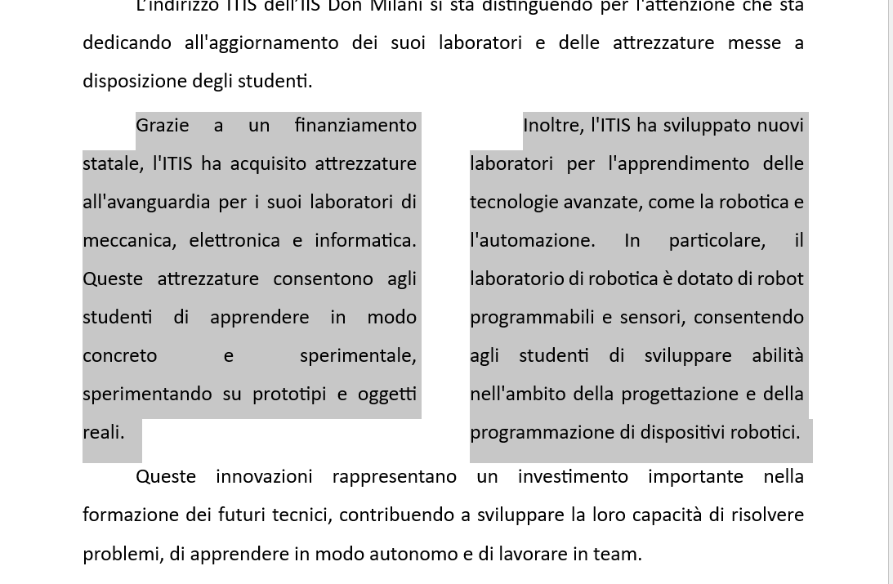
La parte grafica è gestita dal menu . In evidenza gli elementi più utilizzati:
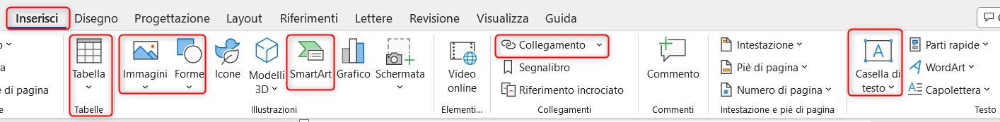
Per inserire un'immagine: → Immagini → "Questo dispositivo…"
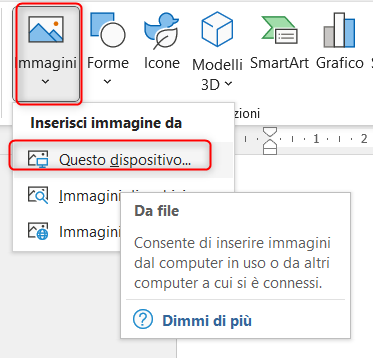
Dal menu è possibile inserire anche forme geometriche, caselle di testo e altri elementi grafici:
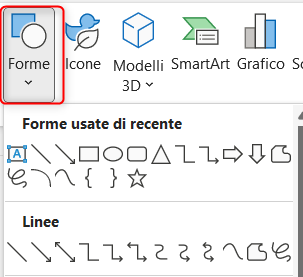
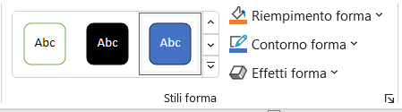
Selezionando un'immagine appaiono i punti di controllo per ridimensionarla e ruotarla:
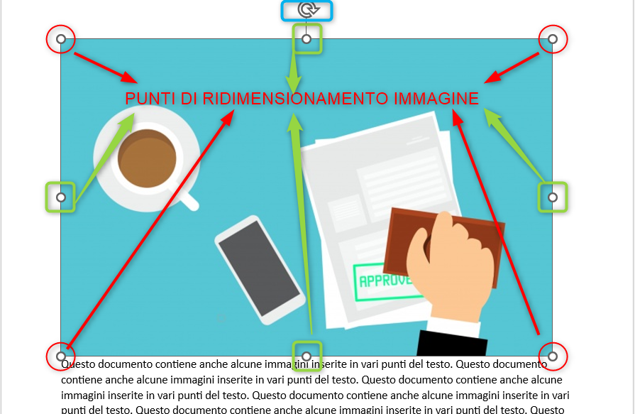
- Angoli (cerchi rossi): ridimensionamento uniforme mantenendo le proporzioni
- Lati centrali (quadrati verdi): ridimensionamento non proporzionale (schiaccia/allarga)
- In alto (rotazione): ruota l'immagine in senso orario/antiorario
Selezionando l'immagine si apre il menu "Formato immagine" con opzioni di personalizzazione avanzate:
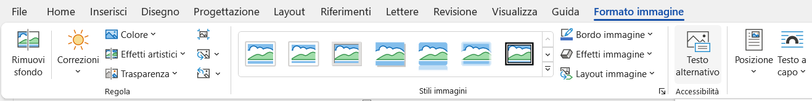
Il comando di disposizione dell'immagine rispetto al testo è l'icona evidenziata:
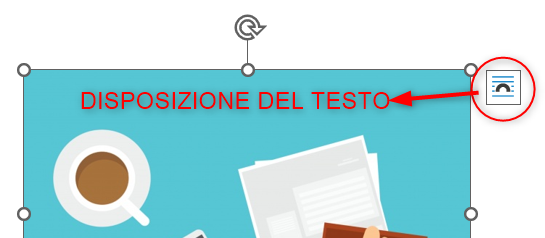
Cliccandola si apre il pannello "Opzioni layout":
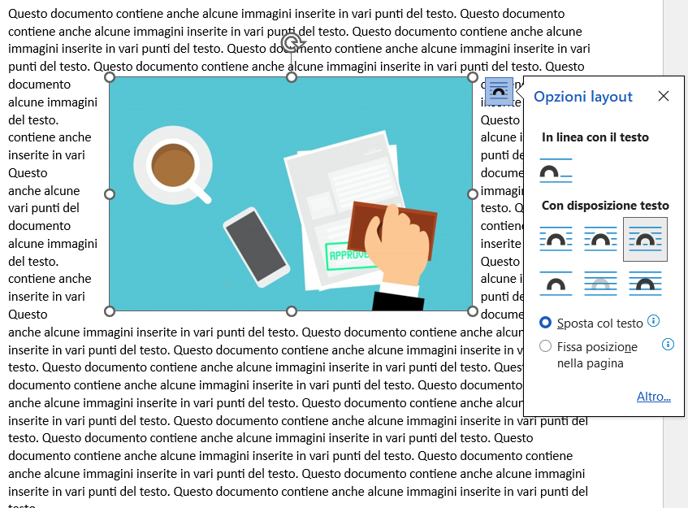
Esempi di disposizione: immagine con testo ravvicinato, dietro al testo (filigrana), sopra e sotto:
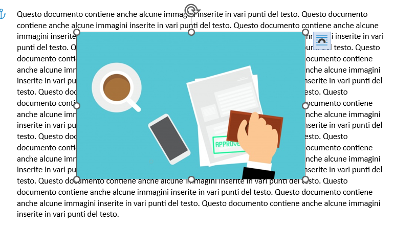
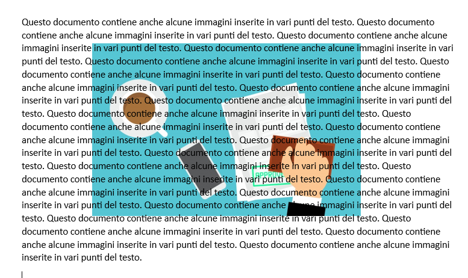
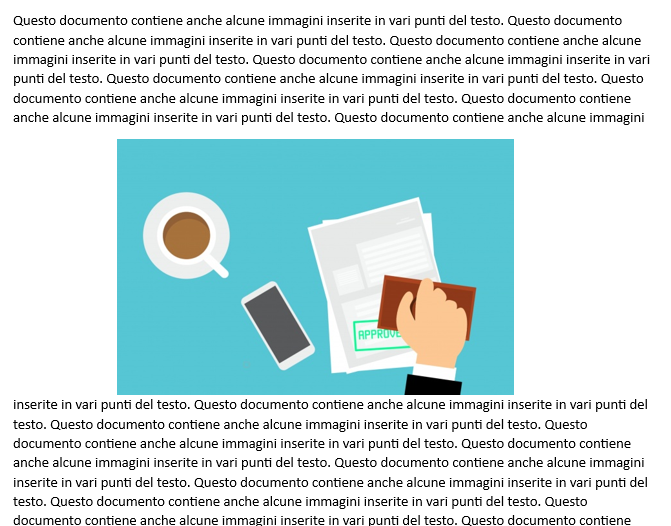
Dal menu è possibile inserire anche collegamenti ipertestuali a pagine web o ad altri documenti:
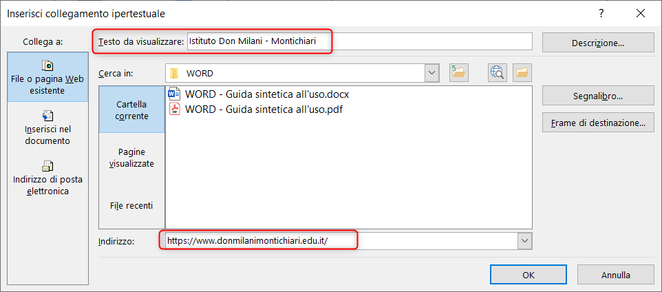
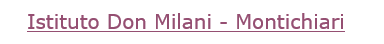
Le tabelle sono accessibili dal menu → Tabella. La griglia permette di preimpostare le dimensioni:
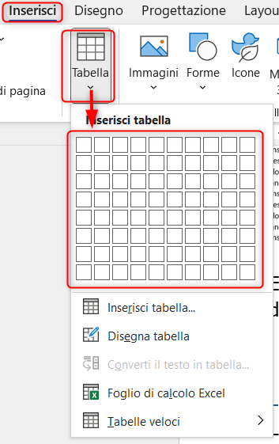
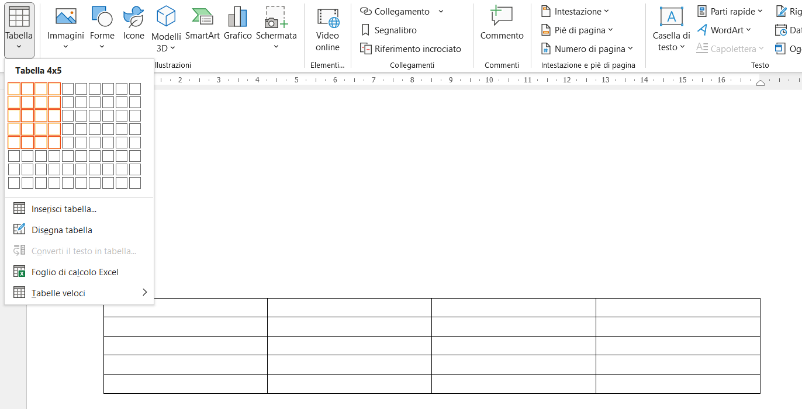
Ogni cella è un "microdocumento" personalizzabile — può contenere testo, immagini e altri elementi:
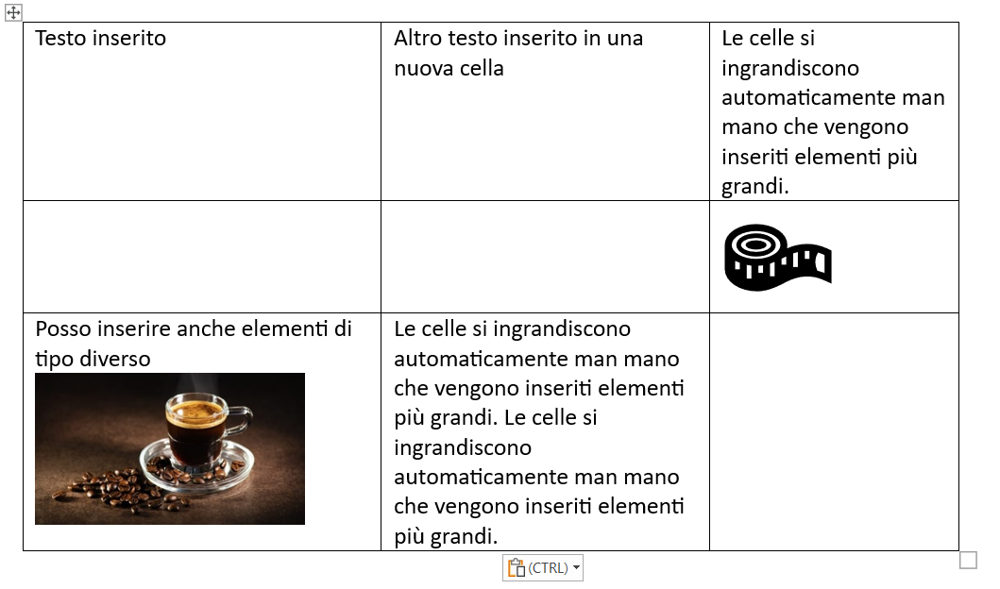
Fusione di celle — selezionare le celle → tasto destro → "Unisci celle":
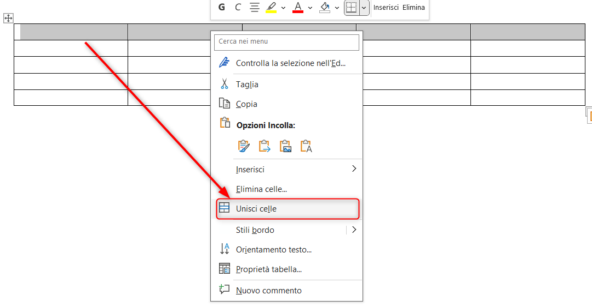
Risultato con celle unite, testo verticale e ridimensionamento personalizzato:
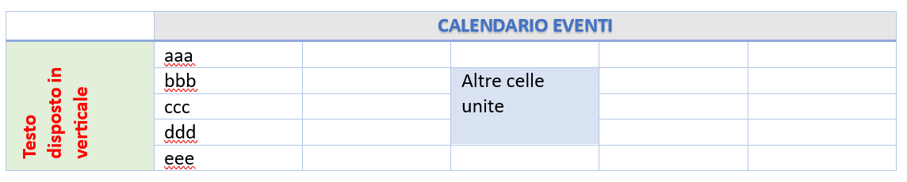
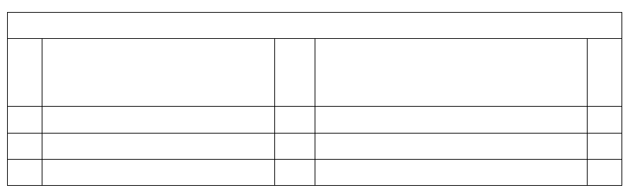
Aggiunta/rimozione di righe e colonne — tasto destro → Inserisci:
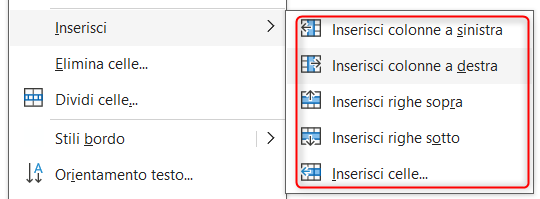
Quando il cursore è all'interno di una tabella, appare il menu "Strumenti Tabella" con due sezioni:
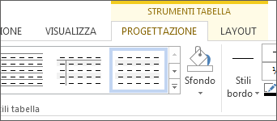
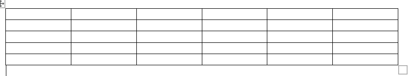
Applicando uno stile predefinito la tabella cambia aspetto radicalmente:
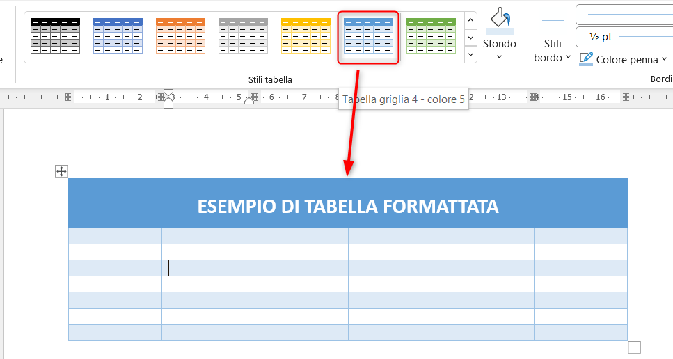
Il menu Bordi permette di lavorare su ogni singolo bordo della tabella:
Word può generare automaticamente un sommario con i titoli delle sezioni e i numeri di pagina corrispondenti.
Il sommario automatico funziona solo se i titoli sono formattati con gli stili Word (Titolo 1, Titolo 2, ecc.), non con formattazione manuale.
Il sommario è navigabile: Ctrl+click su qualsiasi voce porta direttamente alla sezione corrispondente!
Quando si modifica la struttura del documento (nuove sezioni, pagine spostate, titoli modificati) il sommario va aggiornato:
| Funzione | Scorciatoia |
|---|---|
| Copia | Ctrl+C |
| Taglia | Ctrl+X |
| Incolla | Ctrl+V |
| Annulla | Ctrl+Z |
| Ripristina | Ctrl+Y |
| Seleziona tutto | Ctrl+A |
| Grassetto | Ctrl+G |
| Corsivo | Ctrl+I |
| Sottolineato | Ctrl+S |
| Salva | Ctrl+S |
| Salva con nome | F12 |
| Stampa | Ctrl+P |
| Trova e sostituisci | Ctrl+H |
| Interruzione di pagina | Ctrl+Invio |
| Naviga il sommario | Ctrl+click |
| Mostra/nascondi caratteri speciali | Ctrl+* |